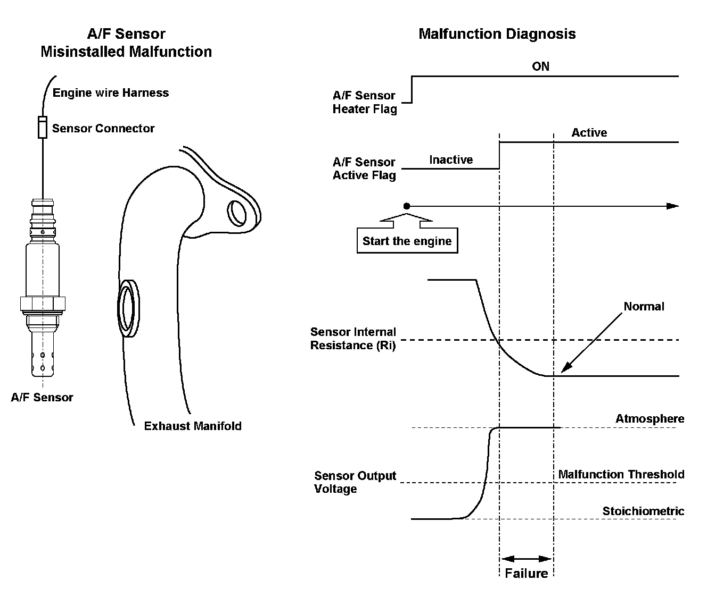
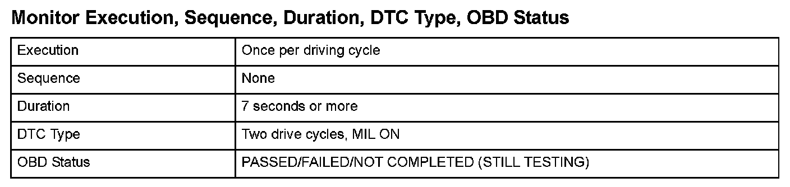
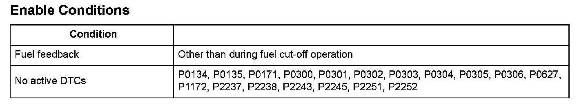

Advanced Diagnostics
DTC P2195: Rear Air/Fuel Ratio (A/F) Sensor (Bank 1, Sensor 1) Signal Stuck Lean
General Description
When the rear air/fuel ratio (A/F) sensor (bank 1, sensor 1) is properly connected to the engine wire harness, but it is not installed in the exhaust pipe, the A/F feedback is not done properly even if the rear A/F sensor is active after starting the engine. Thus, the exhaust emissions increase.
When the rear A/F sensor output stays out of the normal range after the rear A/F sensor becomes active, the powertrain control module (PCM) detects that the rear A/F sensor is not properly installed and a DTC is stored.

Monitor Execution, Sequence, Duration, DTC Type, OBD Status

Enable Conditions
Malfunction Threshold
The rear A/F sensor (bank 1, sensor 1) output voltage is 3.48 V or more for at least 7 seconds.
Driving Pattern
Start the engine, then let it idle for at least 2 minutes.
Diagnosis Details
Conditions for illuminating the MIL
When a malfunction is detected during the first drive cycle, a Temporary DTC is stored in the PCM memory. If the malfunction recurs during the next (second) drive cycle, the MIL comes on and the DTC and the freeze frame data are stored.
Conditions for clearing the MIL
The MIL will be cleared if the malfunction does not recur during three consecutive trips in which the diagnostic runs.
The MIL, the DTC, the Temporary DTC, and the freeze frame data can be cleared by using the scan tool Clear command or by disconnecting the battery.